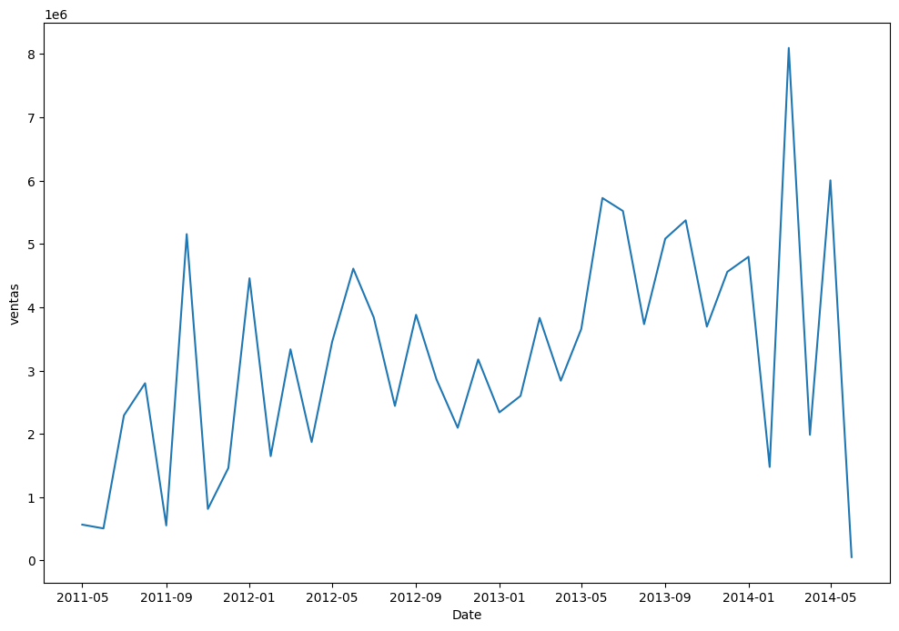
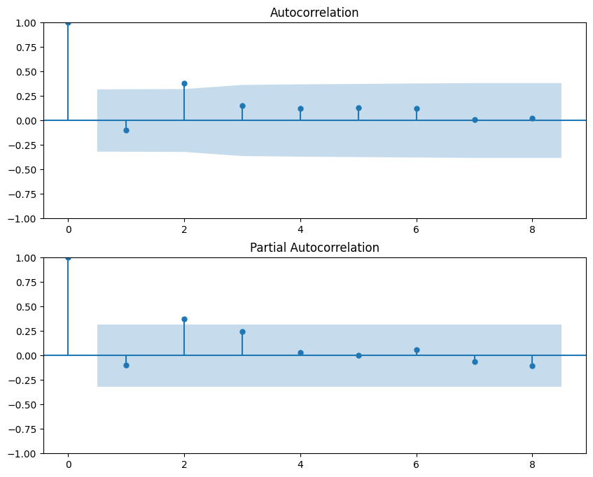
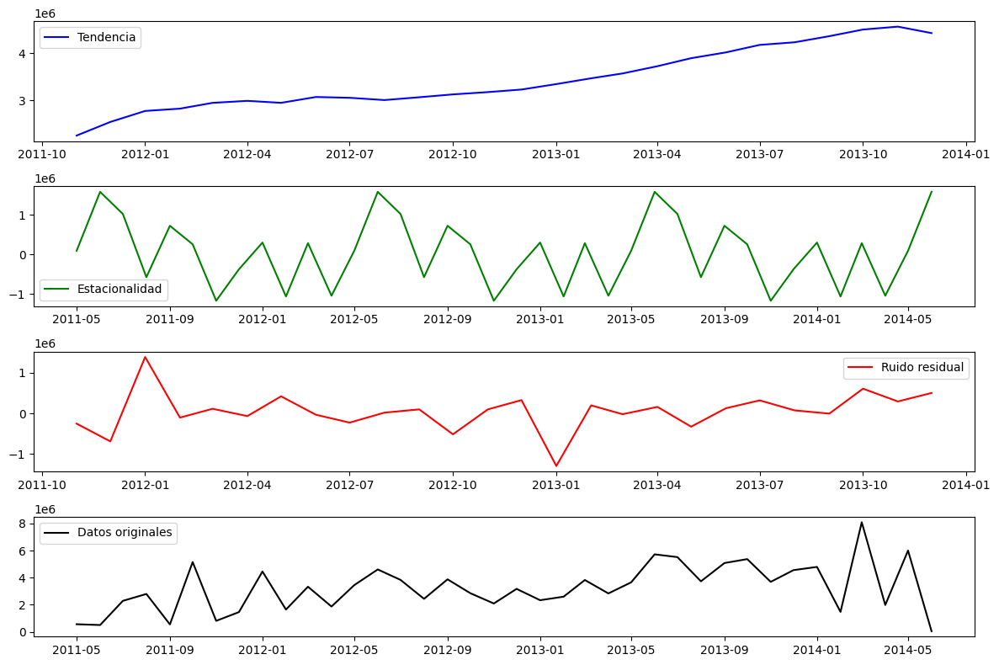
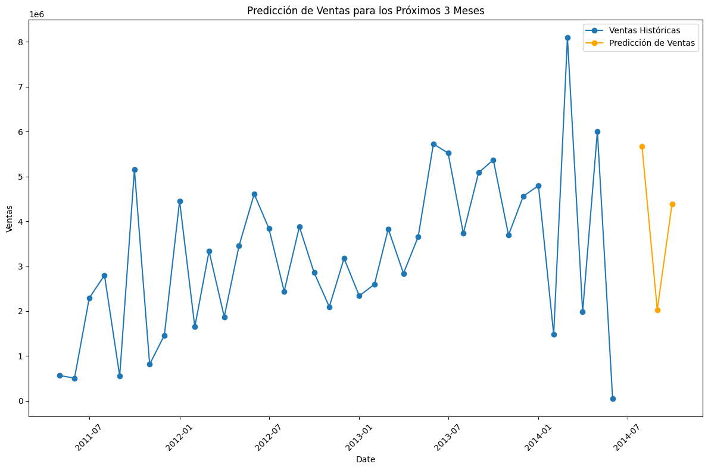

Análisis de tendencias#
Carga de las librerías de Python necesarias#
import pyodbc
import numpy as np
import pandas as pd
import matplotlib.pyplot as plt
from statsmodels.tsa.stattools import adfuller, acf, pacf
from statsmodels.graphics.tsaplots import plot_acf, plot_pacf
from statsmodels.tsa.seasonal import seasonal_decompose
from statsmodels.tsa.arima_model import ARIMA
pd.options.display.float_format = '{:.2f}'.format
plt.rcParams['figure.figsize'] = [12, 8]
import warnings
warnings.filterwarnings('ignore')
---------------------------------------------------------------------------
ModuleNotFoundError Traceback (most recent call last)
Cell In[1], line 5
3 import pandas as pd
4 import matplotlib.pyplot as plt
----> 5 from statsmodels.tsa.stattools import adfuller, acf, pacf
6 from statsmodels.graphics.tsaplots import plot_acf, plot_pacf
7 from statsmodels.tsa.seasonal import seasonal_decompose
ModuleNotFoundError: No module named 'statsmodels'
Extracción de datos desde SQL Server#
path="C:\\Users\\Desarrollador XPD\\Documents\\Anaconda\\portafolios\\ecommerce"
df= pd.read_csv(path+"\\forecast.csv")
df=df.dropna()
df.head()
| año | mes | ventas | |
|---|---|---|---|
| 0 | 2011 | 5 | 567020.95 |
| 1 | 2011 | 6 | 507096.47 |
| 2 | 2011 | 7 | 2292182.88 |
| 3 | 2011 | 8 | 2800576.17 |
| 4 | 2011 | 9 | 554791.61 |
df['Date'] = pd.to_datetime(df['mes'].astype(str) + '-' + df['año'].astype(str), format='%m-%Y')
df.head()
| año | mes | ventas | Date | |
|---|---|---|---|---|
| 0 | 2011 | 5 | 567020.95 | 2011-05-01 |
| 1 | 2011 | 6 | 507096.47 | 2011-06-01 |
| 2 | 2011 | 7 | 2292182.88 | 2011-07-01 |
| 3 | 2011 | 8 | 2800576.17 | 2011-08-01 |
| 4 | 2011 | 9 | 554791.61 | 2011-09-01 |
df_forecasting = df.groupby('Date')['ventas'].sum().reset_index()
df_forecasting['Date'] = pd.to_datetime(df_forecasting['Date'])
df_forecasting = df_forecasting.sort_values(by='Date')
df_forecasting.fecha = pd.to_datetime(df_forecasting.Date)
df_forecasting.set_index("Date", inplace=True)
df_forecasting.tail(10)
| ventas | |
|---|---|
| Date | |
| 2013-09-01 | 5083505.34 |
| 2013-10-01 | 5374375.94 |
| 2013-11-01 | 3694668.00 |
| 2013-12-01 | 4560577.10 |
| 2014-01-01 | 4798027.87 |
| 2014-02-01 | 1478213.29 |
| 2014-03-01 | 8097036.31 |
| 2014-04-01 | 1985886.15 |
| 2014-05-01 | 6006183.21 |
| 2014-06-01 | 54151.48 |
plt.plot(df_forecasting['ventas'])
plt.xlabel('Date')
plt.ylabel('ventas')
plt.show()

El gráfico muestra fluctuaciones en las ganancias de la venta de productos entre 2011 y 2014, con picos significativos en ciertos meses y caídas pronunciadas en otros. Esto sugiere una estacionalidad en las ventas o la influencia de factores externos que afectan la demanda.
def test_estacionariedad(serie):
result = adfuller(serie)
print(f'ADF: {result[0]:.4f}')
print(f'p-value: {result[1]:.4f}')
print('Valores críticos:')
for key, value in result[4].items():
print(f' {key}: {value:.4f}')
if result[1] <= 0.05:
print('La serie es estacionaria')
else:
print('La serie no es estacionaria')
test_estacionariedad(df_forecasting.ventas)
ADF: -3.3620
p-value: 0.0123
Valores críticos:
1%: -3.6267
5%: -2.9460
10%: -2.6117
La serie es estacionaria
fig, (ax1, ax2) = plt.subplots(2, 1, figsize=(10,8))
plot_acf(df_forecasting['ventas'], ax=ax1, lags=8)
plot_pacf(df_forecasting['ventas'], ax=ax2, lags=8)
plt.show()

result = seasonal_decompose(df_forecasting['ventas'], model='additive', period=12)
plt.subplot(411)
plt.plot(result.trend, label='Tendencia', color='blue')
plt.legend(loc='best')
plt.subplot(412)
plt.plot(result.seasonal,label='Estacionalidad', color='green')
plt.legend(loc='best')
plt.subplot(413)
plt.plot(result.resid, label='Ruido residual', color='red')
plt.legend(loc='best')
plt.subplot(414)
plt.plot(df_forecasting['ventas'], label='Datos originales', color='black')
plt.legend(loc='best')
# Ajustar los espacios entre las gráficas
plt.tight_layout()
# Mostrar la gráfica
plt.show()

La línea de tendencia muestra un ascenso constante y gradual de octubre 2011 a enero 2014, sin giros abruptos ni estancamientos.
from statsmodels.tsa.arima.model import ARIMA
# Ajustar el modelo ARIMA
model = ARIMA(df_forecasting['ventas'], order=(1, 1, 1)) # Ajusta los parámetros según sea necesario
model_fit = model.fit()
print(model_fit.summary())
SARIMAX Results
==============================================================================
Dep. Variable: ventas No. Observations: 38
Model: ARIMA(1, 1, 1) Log Likelihood -580.052
Date: Tue, 12 Aug 2025 AIC 1166.104
Time: 09:34:58 BIC 1170.937
Sample: 05-01-2011 HQIC 1167.808
- 06-01-2014
Covariance Type: opg
==============================================================================
coef std err z P>|z| [0.025 0.975]
------------------------------------------------------------------------------
ar.L1 -0.6483 0.170 -3.819 0.000 -0.981 -0.316
ma.L1 -0.5167 0.182 -2.846 0.004 -0.873 -0.161
sigma2 2.285e+12 3.28e-14 6.96e+25 0.000 2.28e+12 2.28e+12
===================================================================================
Ljung-Box (L1) (Q): 0.24 Jarque-Bera (JB): 0.06
Prob(Q): 0.63 Prob(JB): 0.97
Heteroskedasticity (H): 1.33 Skew: -0.09
Prob(H) (two-sided): 0.63 Kurtosis: 2.91
===================================================================================
Warnings:
[1] Covariance matrix calculated using the outer product of gradients (complex-step).
[2] Covariance matrix is singular or near-singular, with condition number 5.43e+41. Standard errors may be unstable.
forecast = model_fit.forecast(steps=3)
print(forecast)
2014-07-01 5667064.15
2014-08-01 2027975.01
2014-09-01 4387350.71
Freq: MS, Name: predicted_mean, dtype: float64
# Verifica el contenido de forecast_df
# Crear un rango de fechas para las predicciones
forecast_index = pd.date_range(start=df_forecasting.index[-1] + pd.DateOffset(months=1), periods=3, freq='M')
# Graficar
plt.figure()
plt.plot(df_forecasting.index, df_forecasting['ventas'], label='Ventas Históricas', marker='o')
plt.plot(forecast_index, forecast, label='Predicción de Ventas', marker='o', color='orange')
plt.title('Predicción de Ventas para los Próximos 3 Meses')
plt.xlabel('Date')
plt.ylabel('Ventas')
plt.legend()
# plt.grid()
plt.xticks(rotation=45)
plt.tight_layout()
plt.show()

Se espera un crecimiento ligero y sostenido en los próximos tres meses, manteniéndose por encima del nivel actual sin caídas abruptas. La variabilidad prevista es reducida, lo que minimiza el riesgo de desvíos significativos respecto a la proyección.
from statsmodels.tsa.stattools import adfuller
import itertools
# Función para evaluar modelos ARIMA
def evaluate_models(df, p_values, d_values, q_values):
best_aic = float("inf")
best_order = None
best_model = None
for p, d, q in itertools.product(p_values, d_values, q_values):
try:
model = ARIMA(df['ventas'], order=(p, d, q))
model_fit = model.fit()
if model_fit.aic < best_aic:
best_aic = model_fit.aic
best_order = (p, d, q)
best_model = model_fit
except:
continue
return best_order, best_model
# Definir rangos de p, d y q
p_values = range(0, 9) # Puedes ajustar este rango
d_values = [1] # Generalmente 1
q_values = range(0, 9) # Puedes ajustar este rango
# Evaluar modelos
best_order, best_model = evaluate_models(df_forecasting, p_values, d_values, q_values)
# Mostrar el mejor modelo
print(f"Mejor orden ARIMA: {best_order}")
print(f"AIC del mejor modelo: {best_model.aic}")
Mejor orden ARIMA: (1, 1, 1)
AIC del mejor modelo: 1166.1044664366325